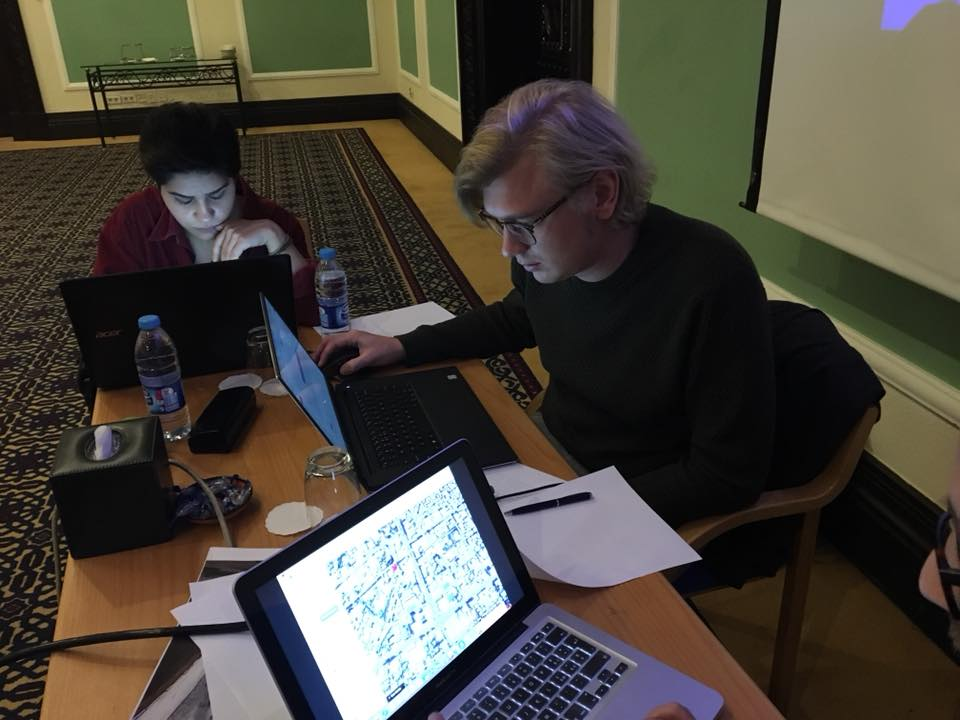

Following the creation of Bellingcat in 2014, the first few years were focused on publishing investigations, and running training sessions. In December 2017, Christiaan Triebert hosted a workshop as a representative of Bellingcat. The image above shows Christiaan at that event. Your task is to identify the name of the room seen in the photo (answer format: The Name Of The Room).
